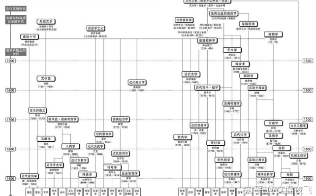
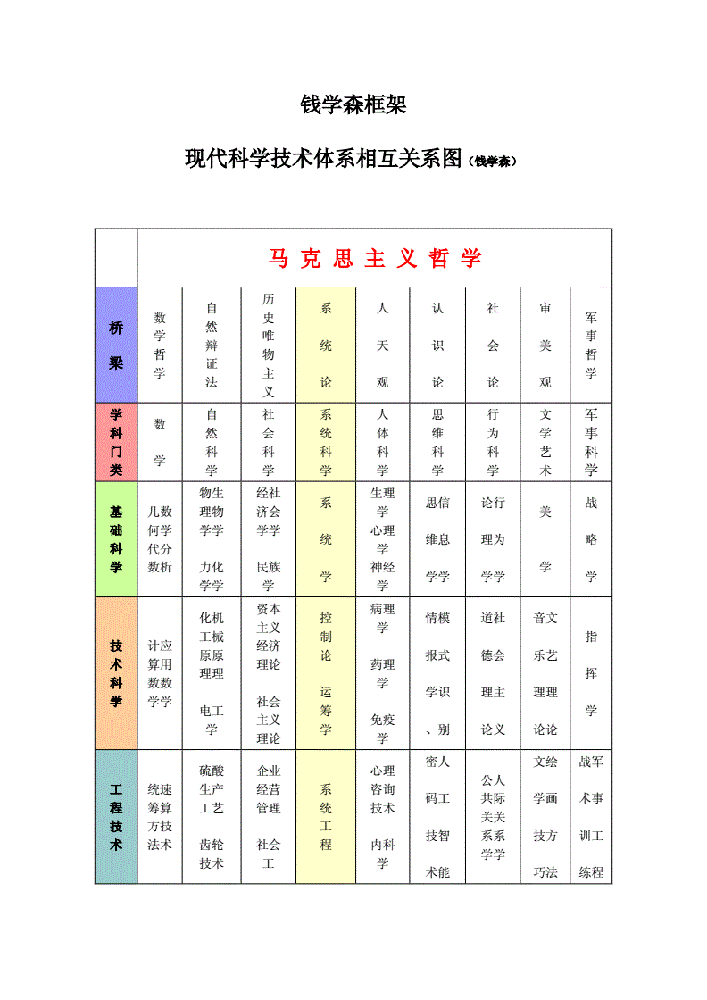

通识教育的英文是，liberal education，即自由教育，是对心灵的自由滋养，其核心是——自由的精神、公民的责任、远大的志向。
通识教育是对所有通读所有学科的知识，成为一个全才，不是为了学习而学习，是为了成长，是为了让自己和这个世界能和谐相处而学，打通所有学科的知识，站在不同维度认知这个世界。 先看看大师们关于学科的关联关系有怎样的认识：
罗素说：
所有学说的一端是科学（自然科学），另一端是神学，而介于两者之间的，是哲学等社会科学。科学是精确的，神学是虚幻的，而社会科学虽不能精确和试验，却可以观察或以经验表明。
杨振宁说：
物理的尽头是数学，数学的尽头是哲学，哲学的尽头是神学
耶鲁校长：理查德·莱文曾说过：
如果一个学生从耶鲁大学毕业后，居然拥有了某种很专业的知识和技能，这是耶鲁教育最大的失败。因为，他认为，专业的知识和技能，是学生们根据自己的意愿，在大学毕业后才需要去学习和掌握的东西，那不是耶鲁大学教育的任务。
正如《大学的观念》（《The Idea of a University》）的作者约翰·纽曼（John Henry Newman）所说
只有教育，才能使一个人对自己的观点和判断有清醒和自觉的认识，只有教育，才能令他阐明观点时有道理，表达时有说服力，鼓动时有力量。教育令他看世界的本来面目，切中要害，解开思绪的乱麻，识破似是而非的诡辩，撇开无关的细节。教育能让人信服地胜任任何职位，驾轻就熟地精通任何学科。”
一、通识教育体系分类
网上有一个叫夏广润的朋友提出一个框架很好，他说个人教育应该注重四个方面的修炼：
1.1 按照人与各维度关系分类
1、人与群体的关系，这要靠道德、法律和制度，这得看看伦理学、法学和管理学的书籍。
2、人与社会的关系，这要靠社会学/经济学/政治学/历史等等知识。
3、人和自然的关系，这靠自然科学（数理化生物地理等，如果不是专业需要，我推荐大家多读读自然科学史即可）
4、人和自己的关系，这要靠心理按摩，信仰就是最重要的一种（可能是某个宗教经典或者哲学或者心理学或者经典传记）。
1.2 《通识》书籍学科体系关联

' fill='%23FFFFFF'%3E%3Crect x='249' y='126' width='1' height='1'%3E%3C/rect%3E%3C/g%3E%3C/g%3E%3C/svg%3E)
1.3 钱学森框架：

二、美国的通识教育
美国大学一般通识教育体系（不同学校分类有区别，但基本涵盖如下所有细分），分8大类N多小类：
- 西方文化研究，主要涉及欧美的文化和历史
- 少数文化、非西方文化研究，主要涉及亚洲、非洲、大洋洲、南美洲、美洲印地安、美国黑人等等少数民族及非“欧美主流文化”的研究。
- 写作，主要教授大学学术类写作的基本纲要，包括如何立论、引证、收集证据、论证、结论等写作基本要点。
- 专业写作，主要教授更高级写作技巧，通常与各专业课结合，提升学生在专业领域搜索、阅读文献、总结并表述自己观点的能力。（写作通常也在各类通识教育课程中占20％左右的分数，可见在美国教育中，很重视学生学会知识后的应用）
- 人文与艺术，主要涉及历史和艺术，比较常见的如音乐史、文学史、文学研究、作品赏析等。
- 自然科学与技术，主要涉及物理科学（物理、化学），生命科学（生物、植物学、神经学），天文地理等等
- 社会与行为科学，主要涉及经济学、人类学、社会学、心理学等
- 数理逻辑推理，主要涉及数学、计算机编程、逻辑学、统计学等。
- （补充）大部分学校还要求至少修习一门外语，常见的有法语、西班牙语、德语、中文、日文、阿拉伯语等等
可以看出，部分学科是有交叉的，比如文化研究就经常与人文艺术相关联。比如一门“古希腊罗马神话”的课就会从属于“西方文化”和“人文与艺术”两个类别。
通识教育的受众是全体大学生，而不仅仅是文理学院的学生。
通识教育的目的是教授所有大学生（不论文科、工科、社科还是理科生）基本且全面的社会常识。这种社会常识不仅仅在知识上，也在处理问题的方法上，更确切地说，是帮助大学生建立一套完整的知识体系和框架（也就是常识），以帮助大学生形成自己的价值观、世界观，更好地认知世界，更好地通过自己的常识和科学的思维方法独立思考。
在西方社会的观点中，认为如果不掌握这些基本技能，你根本不是一个合格的社会公民，你不能健全的参与社会活动，社会对你的教育就失败了。一个健全的社会，其社会的主体必须是由这些受过健全的教育的人所组成的。实际上这并不是西方才有的观点，儒家所谓“六艺”就是中国古代社会对一个读书人（士）所提出的基本要求，不掌握这些，你作为读书人是不合格的，也没有参与社会事务的资格。可以看出古代是重视素质教育的，德智体美劳全面发展的素质教育
以上是通识教育体系的分类和美国大学的通识教育，后续的文章讲继续深入讨论通识教育